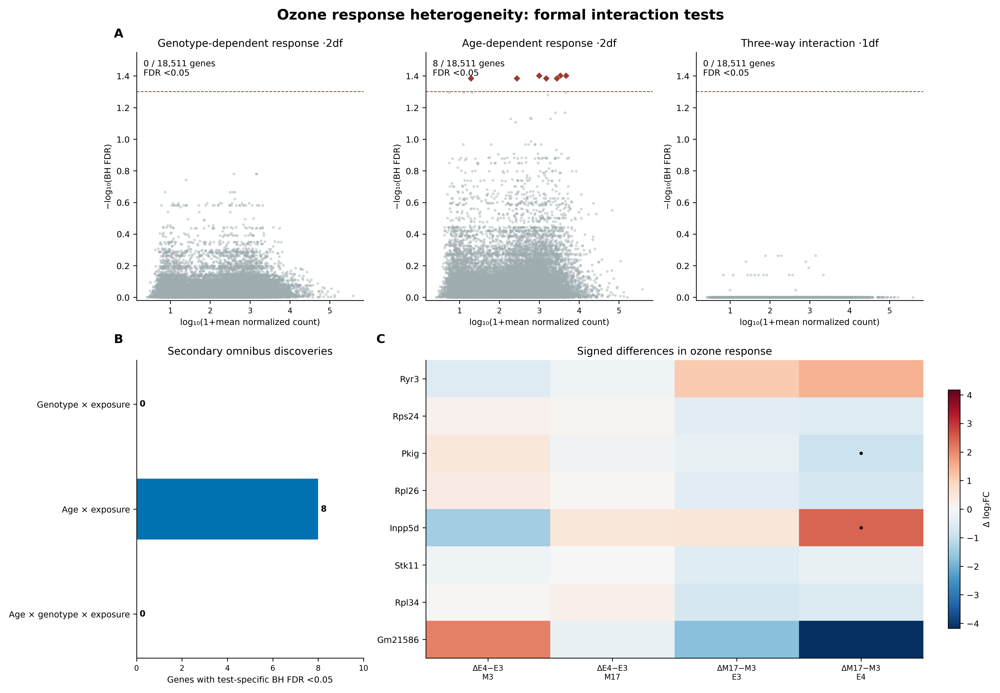
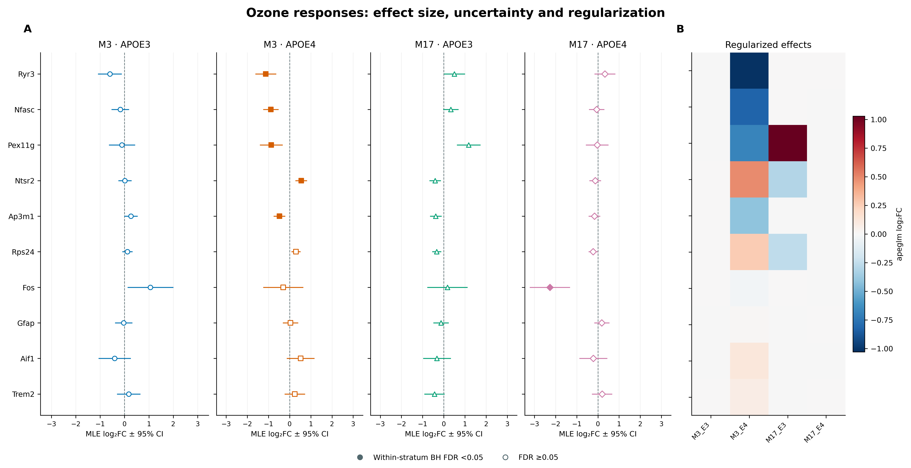
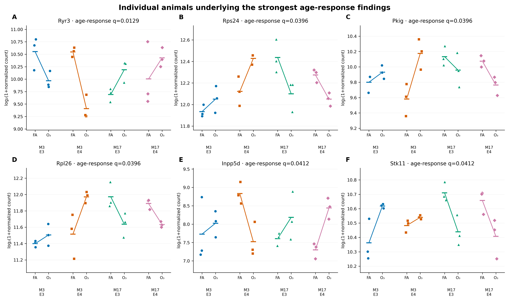
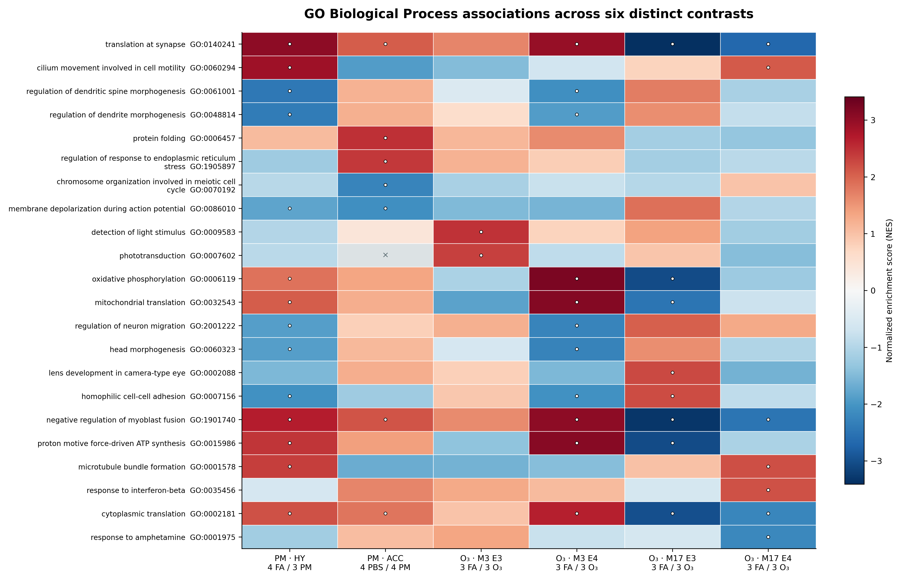
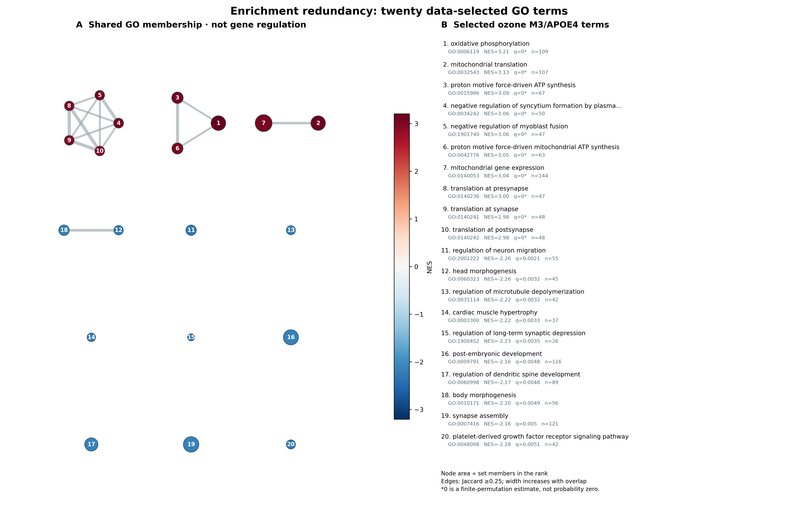

| Test | df | Valid tests | BH < 0.05 within family | BH < 0.05 across three families |
|---|---|---|---|---|
| Genotype-dependent response | 2 | 18511 | 0 | 0 |
| Age-dependent response | 2 | 18511 | 8 | 1 |
| Age × genotype × exposure | 1 | 18511 | 0 | 0 |
Response heterogeneity and pathway architecture
Secondary analyses with formal interaction tests and linked molecular panels
Scientific question and analysis status
The primary ozone contrasts quantify exposure-associated differences within each age/APOE stratum. A significant result in one stratum and a nonsignificant result in another does not establish different responses. This secondary analysis directly tests whether the O₃-versus-filtered-air effect differs by age or genotype. It uses the same 24 animals and 18,537 retained genes, without adding independent biological observations. These are new exploratory analyses of Nakamya et al.’s deposit, distinct from reproduction of the authors’ results. Nakamya et al. (2025)
Bulk tissue effects can reflect expression regulation, cell composition, or vascular material. Neither an interaction coefficient nor a GO label identifies a responding cell type. The measured MERFISH reference provides anatomical context for hypothalamic PM2.5; it does not validate the hippocampal ozone effects.
Methods: compare responses directly
The negative-binomial model is ~age * genotype * exposure. The full design has rank eight. Effective-length normalization offsets and fitted dispersions are preserved from the primary all-animal model. Nested likelihood-ratio tests remove the specified exposure interactions while retaining the relevant main effects. Love et al. (2014)
| Question | Reduced model | Degrees of freedom |
|---|---|---|
| Does response depend on genotype across ages? | ~age * genotype + exposure + age:exposure |
2 |
| Does response depend on age across genotypes? | ~age * genotype + exposure + genotype:exposure |
2 |
| Is there an additional age × genotype × exposure term? | ~(age + genotype + exposure)^2 |
1 |
Each test has its own BH family across genes. Supplementary columns apply BH jointly across the three LRT families. Cook’s filtering remains active; adaptive independent filtering is disabled. Nonconverged fits have p-values withheld before adjustment. All full and reduced coefficient fits converged; 18,511 genes have valid LRT p-values.
Signed conditional Wald contrasts complement these omnibus tests. They estimate differences between log₂ exposure responses, using covariance-aware combinations of model coefficients. Genes with all-zero counts in a required six-animal stratum have estimates withheld. Intervals are pointwise MLE ± 1.95996 SE; they are neither simultaneous intervals nor cellular uncertainty.
Results: age-associated response heterogeneity
The age-dependent exposure test identifies eight genes under its within-family BH threshold: Ryr3, Rps24, Pkig, Rpl26, Inpp5d, Stk11, Rpl34, and Gm21586. Only Ryr3 (joint q ≈ 0.0386) remains below 0.05 when all three LRT families are adjusted jointly. The genotype-dependent omnibus and three-way tests identify no genes at their respective within-family thresholds. These null results leave limited power with three animals per group; they do not establish equivalent responses.
| Gene | Mean normalized count | Test statistic | Nominal p | BH FDR |
|---|---|---|---|---|
| Ryr3 | 1.15e+03 | 28.4 | 6.96e-07 | 0.013 |
| Rps24 | 4.66e+03 | 24.7 | 4.32e-06 | 0.040 |
| Pkig | 985 | 23.9 | 6.62e-06 | 0.040 |
| Rpl26 | 3.35e+03 | 23.3 | 8.55e-06 | 0.040 |
| Inpp5d | 271 | 22.7 | 1.18e-05 | 0.041 |
| Stk11 | 1.48e+03 | 22.3 | 1.45e-05 | 0.041 |
| Rpl34 | 2.75e+03 | 22 | 1.71e-05 | 0.041 |
| Gm21586 | 18.4 | 21.9 | 1.78e-05 | 0.041 |


Separate conditional Wald families identify 6 and 4 genotype-response differences at M3 and M17, and 2 and 4 age-response differences in APOE3 and APOE4. The three-way signed contrast identifies none. Their one-degree-of-freedom hypotheses and correction families differ from the omnibus tests; the counts are not interchangeable confirmations.
Effect size, uncertainty, and individual animals




The animal panels show all 24 normalized observations for selected genes. Selection of the strongest age-response genes is secondary and documented, so the visual separation is not an independent validation. The count model is fitted to counts with offsets, rather than the plotted logarithmic values.
Shrinkage needs a separate reading. Some contrast-specific apeglm estimates contract almost completely to zero despite a nonzero MLE and finite Wald evidence. For example, the stored M17/APOE4 result for Fos has MLE approximately −2.27, SE 0.47 and BH q ≈ 0.021, while its shrunken mode is near zero. Convergence alone does not make those two quantities interchangeable. Effect comparisons here use the unshrunken MLE and pointwise interval; the posterior mode remains a separately labeled regularized estimate. The original prior hyperparameters were not retained, so a verified prior scale or computational cause cannot be assigned. The diagnostic table exposes these cases.
Pathway architecture across six contrasts
The following matrix compares signed GSEA normalized enrichment scores for hypothalamus, cortex, and the four ozone strata. It uses the existing frozen MGI/GO analysis; it does not refit or pool the experiments. Up to two significant terms per direction and contrast are selected deterministically, with a Jaccard redundancy filter. The union contains 22 terms. Missing eligibility is shown explicitly rather than treated as zero enrichment. Subramanian et al. (2005) Ashburner et al. (2000)


Outlined circles denote algorithmic GSEA FDR < 0.05, not BH-adjusted gene-level p-values. These gene-set permutations do not preserve gene correlation or sample uncertainty. Tissue, mouse model, exposure route, and assay differ across studies; a difference in NES is not a statistical test of a difference between pollutants. Related GO terms share genes and should not be counted as independent mechanisms.
Oxidative phosphorylation has positive NES in hypothalamic PM2.5 (1.847; estimated FDR 0.0326) and M3/APOE4 ozone (3.205), but negative NES in M17/APOE3 ozone (−3.054). Translation-at-synapse annotations also change ranking direction between younger and older ozone strata. These descriptive patterns motivate hypotheses about energy and translational programs, without measuring pathway activation or proving differences between studies. An estimated GSEA FDR of zero reflects finite permutations, not zero probability.
Resolve redundancy through gene-set overlap


The network contains the ten strongest positive and ten strongest negative selected terms for the M3/APOE4 ozone contrast. Fifteen edges join pairs with membership Jaccard ≥ 0.25. Node size represents eligible gene-set size and node color represents NES. Edges express shared annotation members; they do not establish coexpression, protein binding, causal regulation, or anatomical connectivity. The numbered term table and node/edge downloads allow every grouping to be inspected.
Interpretation and downloadable evidence
The formal tests support a small, threshold-sensitive set of age-associated ozone response differences. The GO panels summarize coordinated rank patterns and annotation redundancy. Neither layer determines whether individual neurons or glia change their expression, and the absence of an omnibus genotype discovery does not negate the within-stratum exposure contrasts.
All LRT results · All conditional Wald results · Design matrix · Contrast vectors · Animal profiles · GO matrix source · Network nodes · Network edges · Numerical validation
The figure source tables, exact selection rules, full result families, and 300-dpi PNG plus vector SVG/PDF exports accompany the report. Return to the primary study results or inspect author-result reproduction.
References
Ashburner, Michael, Catherine A. Ball, Judith A. Blake, et al. 2000. “Gene Ontology: Tool for the Unification of Biology.” Nature Genetics 25 (1): 25–29. https://doi.org/10.1038/75556.
Love, Michael I., Wolfgang Huber, and Simon Anders. 2014. “Moderated Estimation of Fold Change and Dispersion for RNA-seq Data with DESeq2.” Genome Biology 15: 550. https://doi.org/10.1186/s13059-014-0550-8.
Nakamya, Mary F, Kaili Hu, Chunsun Jiang, Zechen Chong, and Rui-Ming Liu. 2025. “Age- and ApoE Genotype-Dependent Transcriptomic Responses to O3 in the Hippocampus of Mice.” International Journal of Molecular Sciences 26 (6). https://doi.org/10.3390/ijms26062407.
Subramanian, Aravind, Pablo Tamayo, Vamsi K. Mootha, et al. 2005. “Gene Set Enrichment Analysis: A Knowledge-Based Approach for Interpreting Genome-Wide Expression Profiles.” Proceedings of the National Academy of Sciences 102 (43): 15545–50. https://doi.org/10.1073/pnas.0506580102.